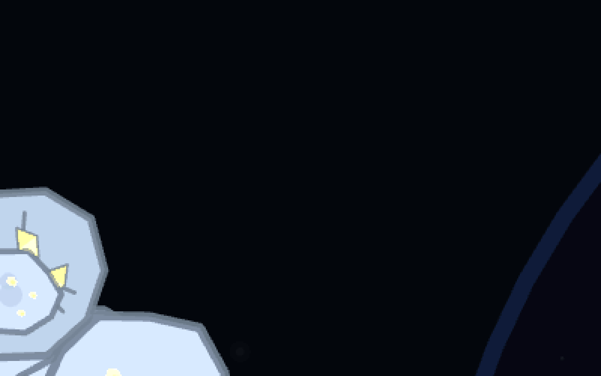
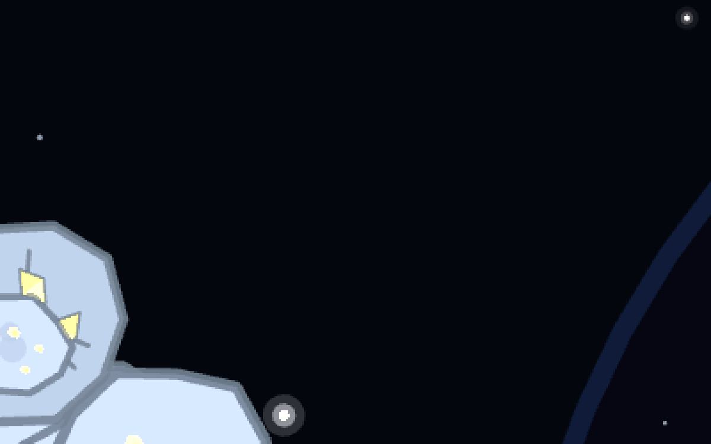
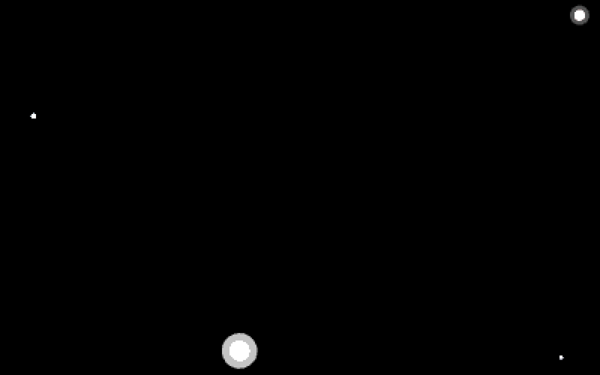
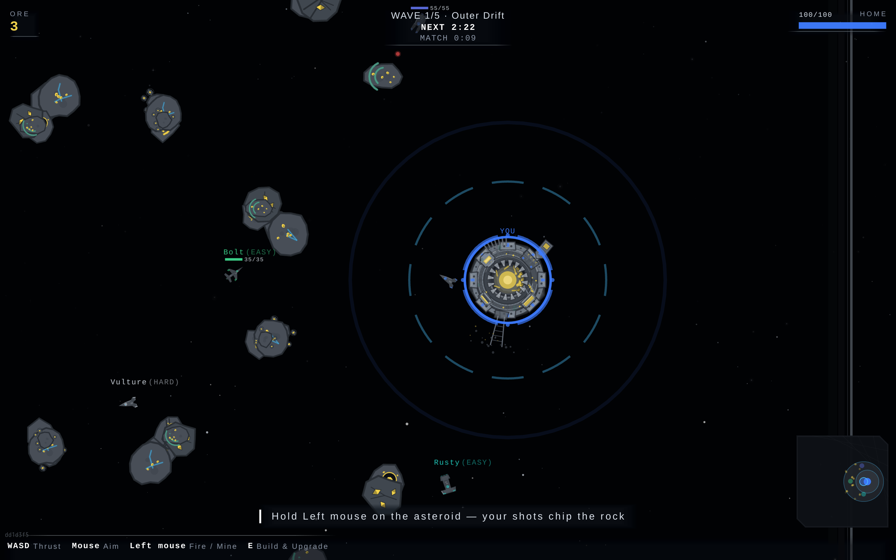
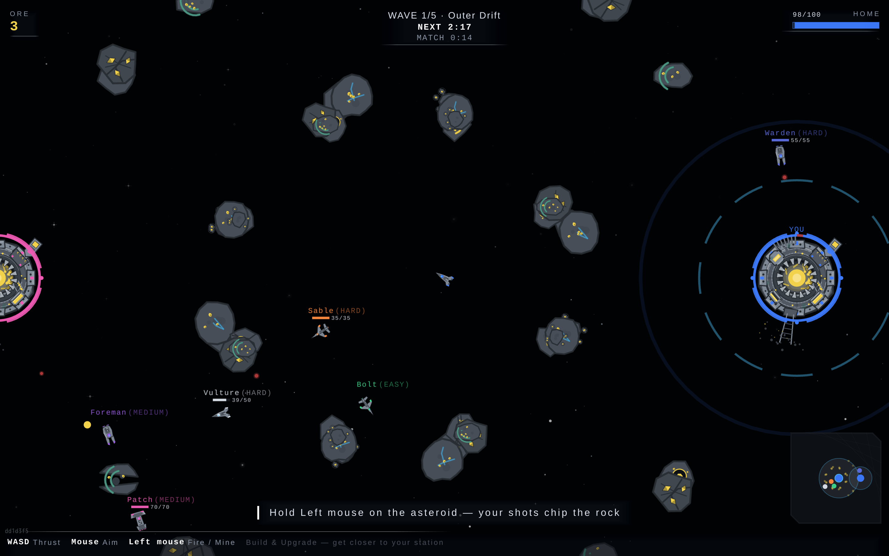
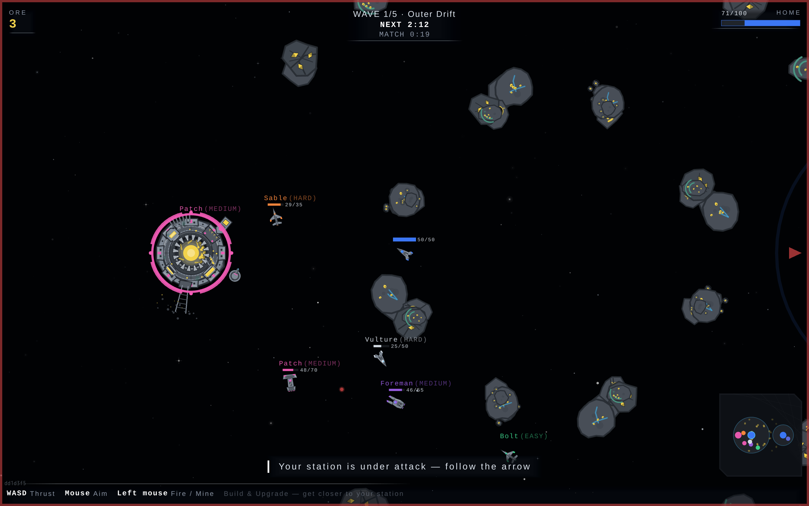
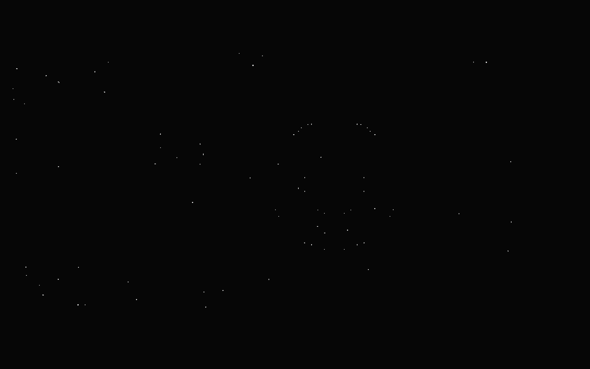
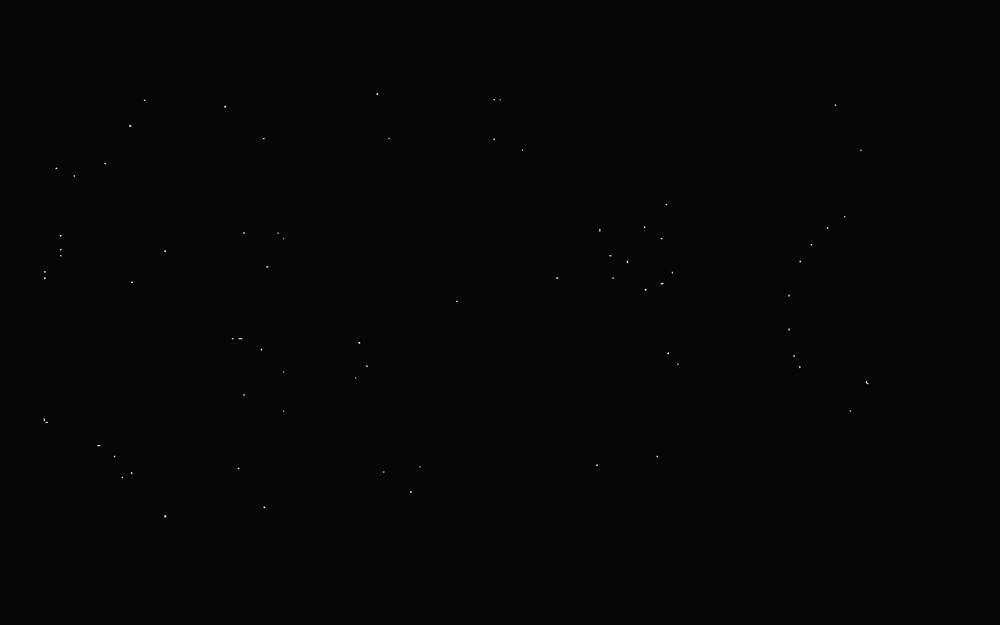
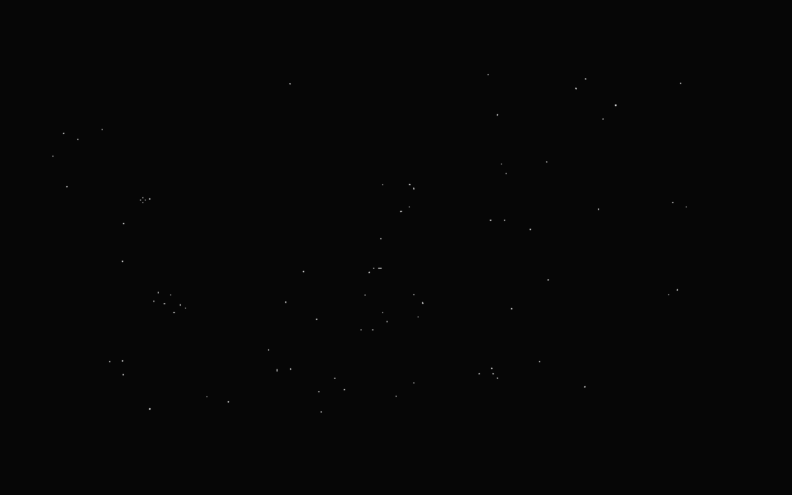

Served bundle dd1d3f5. The live stage carries
void-nebula-coalsack and carries it last — draw order
void-ground › void-stars-deep › void-stars-mid › void-stars-near › void-nebula-coalsack,
i.e. in FRONT of all three star layers, which is what occludes: true is for.
Coalsack is the ground colour, so it adds no light: over the whole frozen frame its own paint
changed 0.1% of pixels, mean ink r17.8 g18.4 b18.9 — neutral grey, the colour of the stars it
covered rather than any ink of its own.


void-nebula-coalsack hidden, same exposure. The stars come back.






| frames | camera travelled | best re-alignment | as % of camera travel | r at screen-locked (0 px) | r at deep stars, parallax 0.10 | r at Coalsack's own 0.14 |
|---|---|---|---|---|---|---|
| 1 → 2 | 473 u = 946 px | 95 px | 10.0% | 0.51347 | 95 px → 0.61149 | 132 px → 0.54092 |
| 1 → 3 | 818 u = 1636 px | 33 px | 2.0% | 0.62055 | 164 px → 0.56559 | 229 px → 0.53481 |
| 2 → 3 | 345 u = 690 px | 68 px | 9.9% | 0.43093 | 69 px → 0.60311 | 97 px → 0.47386 |
What this settles and what it does not. The field is not stuck to the glass: on both short
baselines the profile re-aligns at 10.0% and 9.9% of the camera's travel — the deep star layer's
parallax 0.1 to within a pixel — and scores materially worse at 0 px (0.51 vs 0.61, 0.43 vs 0.60).
It does NOT resolve Coalsack's own 0.14 from the 0.10 of the stars it eats: those predictions are 4% of
travel apart (37 px and 28 px here) and a few hundred star pixels will not separate them; 0.14 scores
below 0.10 on every pair, which is the expected answer for a profile made of STARS.
The long pair (1→3) is the method failing honestly rather than being dropped: it peaks at 33 px and
scores best of all at 0 px. Two reasons, both real — the star field is not rigid (deep 0.10, mid 0.26,
near 0.50 separate by hundreds of px over 1636 px of travel), and frame 1 alone contains the home
station's dashed range rings, thin and dim enough to survive the point detector as fixed structure near
frame centre. Pair 2→3 is the clean one, and it is the one that lands on 0.10.